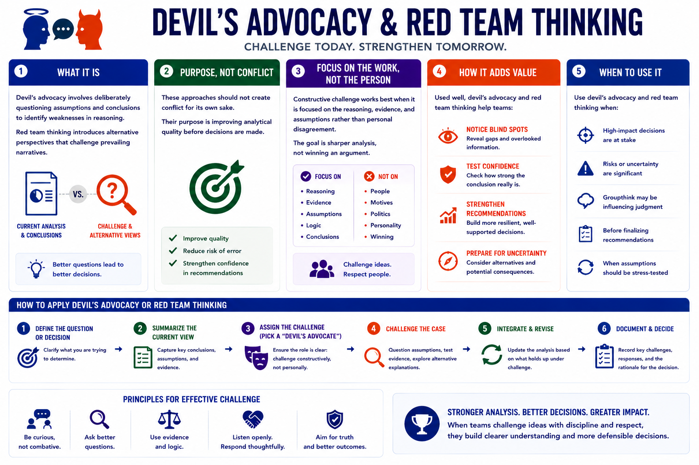

Structured Analytic Techniques
Devil's Advocacy and Red Team Thinking
Connecting to LMS... Progress: in progress
Version 1.0 | Date: 2026-06-16 | Educational overview of structured analytic techniques for judgment under uncertainty.

Narration
Devil's advocacy involves deliberately questioning assumptions and conclusions to identify weaknesses in reasoning. Red team thinking introduces alternative perspectives that challenge prevailing narratives.
These approaches should not create conflict for its own sake. Their purpose is improving analytical quality before decisions are made.
Constructive challenge works best when it is focused on the reasoning, evidence, and assumptions rather than personal disagreement. The goal is sharper analysis, not winning an argument.
Used well, devil's advocacy and red team thinking help teams notice blind spots, test confidence, and strengthen recommendations.